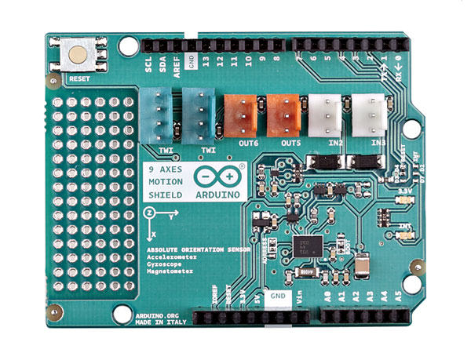

1. Introduction
A human being receives signals continuously from his 5 senses (sight, hearing, taste, smell and touch) and that stream of data are processed or discarded by the Brain.

With a Robot occurs the same, when you plug a sensor into the brick and you execute a program which use a sensor the process about data reading from the environment is quite similar. Sensors are classifid by the nature of the information measured and exist two categories:
-
Exteroceptors Sensors measure the environment from the robot point of view.
-
Proprioceptors Sensors measure the internal state of robot (For example the battery level).
1.1. Exteroceptors sensors
The following sensors are designed to measure the environment.
1.2. Proprioceptors sensors
The following sensors are designed to measure the internal state of the robot.
2. LEGO Sensors
Lego mindstorms ecosystem offers several sensors to use with your Bricks. In the following lists, we will show some examples about sensors available to use with this project.
2.1. LEGO 31313 Kit
This Lego Mindstorms Kit includes the following sensors:

2.2. LEGO 45544 Kit
This Lego Mindstorms Kit includes the following sensors:

2.3. LEGO NXT Sensors
2.4. Dexter Industries BrickPi
The Kit includes the following sensors:
-
Grove Adapter (Only for BrickPi3)

2.6. Mindsensors Sensors
Mindsensors is a classic sensor manufacturer and it is possible use with the Robot the following sensors:
-
AbsoluteIMU
-
Grove Sensor Adapter for EV3
| In the future, the list will grow. |
2.7. Grove Sensors
Grove System, offer a rich set of sensors to measure the environment. Grove is a modular, standardized connector prototyping system. Grove takes a building block approach to assembling electronics. Compared to the jumper or solder based system, it is easier to connect, experiment and build and simplifies the learning system, but not to the point where it becomes dumbed down.

The sensors are possible to connect with your brick in the following ways:
-
EV3: Using the Mindsensors Grove Sensor Adapter for EV3
-
BrickPi+: Using the Mindsensors Grove Sensor Adapter for EV3
-
PiStorms V2: Using the Mindsensors Grove Sensor Adapter for EV3
-
BrickPi 3: It is possible to connect a sensor directly.

Further information about Grove Sensors
3. USB Sensors
3.1. Cameras
USB Cameras is another way to measure the world. Using OpenCV, it is possible to manage a webcam with Java.


3.3. IMU Sensors

3.4. GPS Sensors